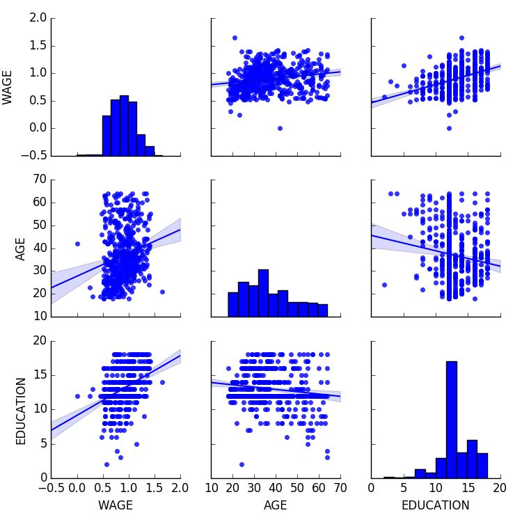
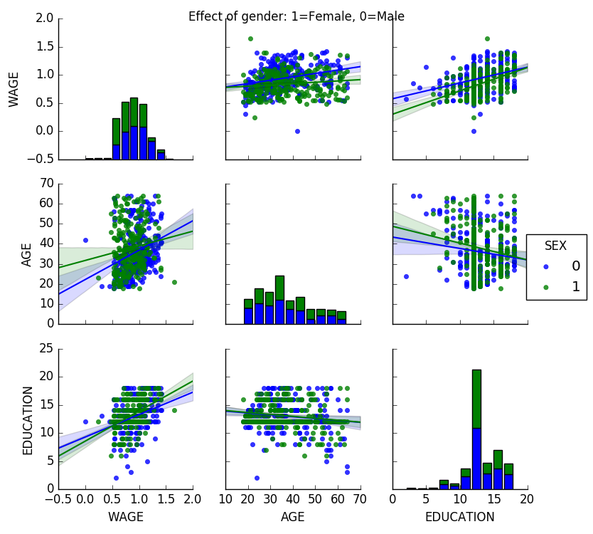
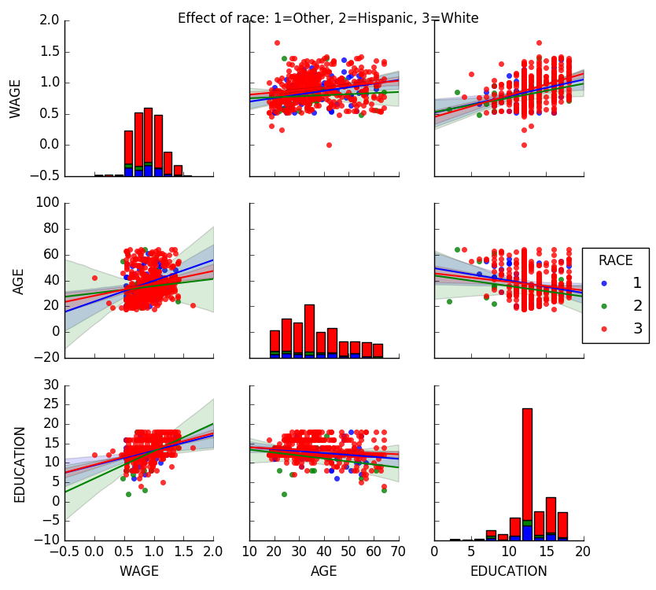
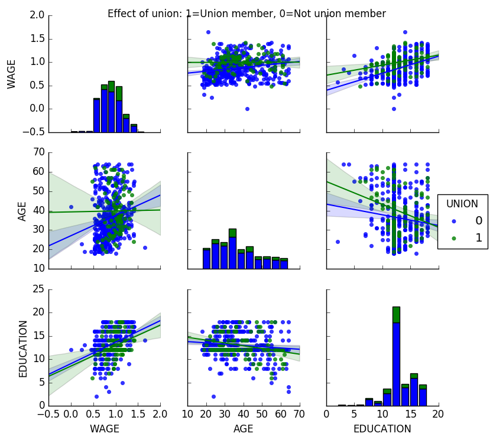
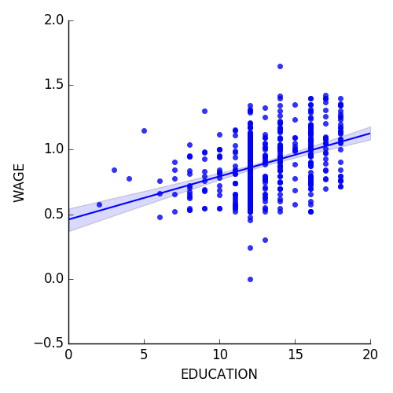

3.1.6.1.7. Visualizing factors influencing wages¶
This example uses seaborn to quickly plot various factors relating wages, experience and eduction.
Seaborn (http://stanford.edu/~mwaskom/software/seaborn/) is a library that combines visualization and statistical fits to show trends in data.
Note that importing seaborn changes the matplotlib style to have an “excel-like” feeling. This changes affect other matplotlib figures. To restore defaults once this example is run, we would need to call plt.rcdefaults().
- 
- 
- 
- 
- 
Python source code: plot_wage_data.py
# Standard library imports
import urllib
import os
import matplotlib.pyplot as plt
##############################################################################
# Load the data
import pandas
if not os.path.exists('wages.txt'):
# Download the file if it is not present
urllib.urlretrieve('http://lib.stat.cmu.edu/datasets/CPS_85_Wages',
'wages.txt')
# Give names to the columns
names = [
'EDUCATION: Number of years of education',
'SOUTH: 1=Person lives in South, 0=Person lives elsewhere',
'SEX: 1=Female, 0=Male',
'EXPERIENCE: Number of years of work experience',
'UNION: 1=Union member, 0=Not union member',
'WAGE: Wage (dollars per hour)',
'AGE: years',
'RACE: 1=Other, 2=Hispanic, 3=White',
'OCCUPATION: 1=Management, 2=Sales, 3=Clerical, 4=Service, 5=Professional, 6=Other',
'SECTOR: 0=Other, 1=Manufacturing, 2=Construction',
'MARR: 0=Unmarried, 1=Married',
]
short_names = [n.split(':')[0] for n in names]
data = pandas.read_csv('wages.txt', skiprows=27, skipfooter=6, sep=None,
header=None)
data.columns = short_names
# Log-transform the wages, because they typically are increased with
# multiplicative factors
import numpy as np
data['WAGE'] = np.log10(data['WAGE'])
##############################################################################
# Plot scatter matrices highlighting different aspects
import seaborn
seaborn.pairplot(data, vars=['WAGE', 'AGE', 'EDUCATION'],
kind='reg')
seaborn.pairplot(data, vars=['WAGE', 'AGE', 'EDUCATION'],
kind='reg', hue='SEX')
plt.suptitle('Effect of gender: 1=Female, 0=Male')
seaborn.pairplot(data, vars=['WAGE', 'AGE', 'EDUCATION'],
kind='reg', hue='RACE')
plt.suptitle('Effect of race: 1=Other, 2=Hispanic, 3=White')
seaborn.pairplot(data, vars=['WAGE', 'AGE', 'EDUCATION'],
kind='reg', hue='UNION')
plt.suptitle('Effect of union: 1=Union member, 0=Not union member')
##############################################################################
# Plot a simple regression
seaborn.lmplot(y='WAGE', x='EDUCATION', data=data)
plt.show()
Total running time of the example: 9.67 seconds ( 0 minutes 9.67 seconds)